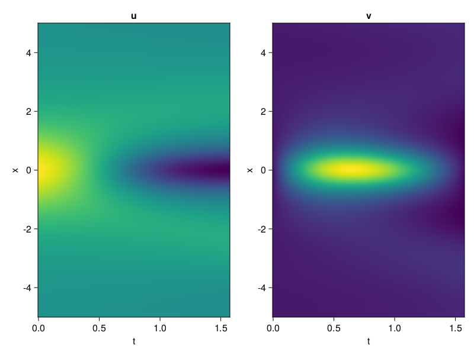
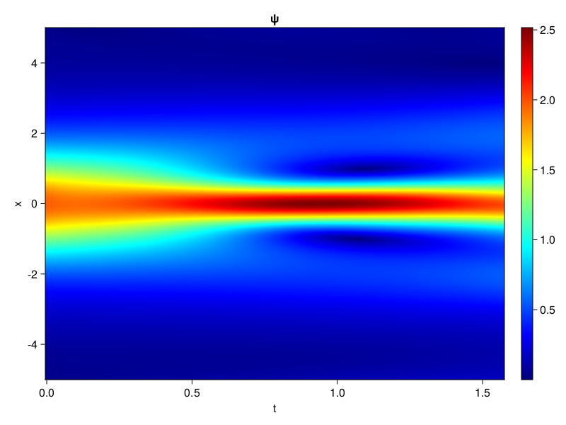
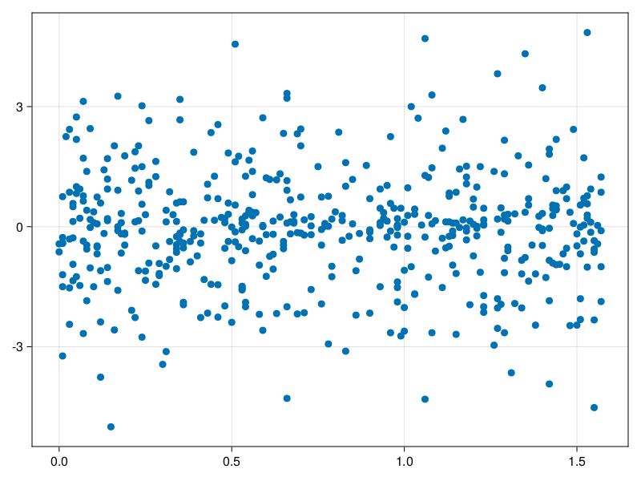

Schrödinger equation
The nonlinear Shrödinger equation is given by
\[\mathrm{i} \partial_t \psi=-\frac{1}{2} \sigma \partial_{x x} \psi-\beta|\psi|^2 \psi\]
Let $\sigma=\beta=1, \psi=u+v i$, the equation can be transformed into a system of partial differential equations
using ModelingToolkit, IntervalSets, Sophon, CairoMakie
using Optimization, OptimizationOptimJL
@parameters x,t
@variables u(..), v(..)
Dₜ = Differential(t)
Dₓ² = Differential(x)^2
eqs=[Dₜ(u(x,t)) ~ -Dₓ²(v(x,t))/2 - (abs2(v(x,t)) + abs2(u(x,t))) * v(x,t),
Dₜ(v(x,t)) ~ Dₓ²(u(x,t))/2 + (abs2(v(x,t)) + abs2(u(x,t))) * u(x,t)]
bcs = [u(x, 0.0) ~ 2sech(x),
v(x, 0.0) ~ 0.0,
u(-5.0, t) ~ u(5.0, t),
v(-5.0, t) ~ v(5.0, t)]
domains = [x ∈ Interval(-5.0, 5.0),
t ∈ Interval(0.0, π/2)]
@named pde_system = PDESystem(eqs, bcs, domains, [x,t], [u(x,t),v(x,t)])\[ \begin{align} \frac{\mathrm{d}}{\mathrm{d}t} u\left( x, t \right) =& - \frac{1}{2} \frac{\mathrm{d}^{2}}{\mathrm{d}x^{2}} v\left( x, t \right) - \left( \left|u\left( x, t \right)\right|^{2} + \left|v\left( x, t \right)\right|^{2} \right) v\left( x, t \right) \\ \frac{\mathrm{d}}{\mathrm{d}t} v\left( x, t \right) =& \frac{1}{2} \frac{\mathrm{d}^{2}}{\mathrm{d}x^{2}} u\left( x, t \right) + \left( \left|u\left( x, t \right)\right|^{2} + \left|v\left( x, t \right)\right|^{2} \right) u\left( x, t \right) \end{align} \]
pinn = PINN(u = Siren(2,1; hidden_dims=16,num_layers=4, omega = 1.0),
v = Siren(2,1; hidden_dims=16,num_layers=4, omega = 1.0))
sampler = QuasiRandomSampler(500, (200,200,20,20))
strategy = NonAdaptiveTraining(1,(10,10,1,1))
prob = Sophon.discretize(pde_system, pinn, sampler, strategy)OptimizationProblem. In-place: true
u0: ComponentVector{Float32}(u = (layer_1 = (weight = Float32[0.21905345 0.28713304; -0.20706266 0.2469505; … ; 0.10749173 0.2127896; 0.3359657 0.48340356], bias = Float32[0.0; 0.0; … ; 0.0; 0.0;;]), layer_2 = (weight = Float32[0.32214198 -0.23373826 … -0.37507048 0.50800943; 0.24739942 -0.44129068 … -0.17703922 0.53241533; … ; 0.4571087 0.28877535 … -0.11432473 0.029784195; 0.044367354 0.4022619 … -0.05338817 0.5737409], bias = Float32[0.0; 0.0; … ; 0.0; 0.0;;]), layer_3 = (weight = Float32[0.23515184 0.45930222 … -0.3538874 -0.3089197; 0.027544321 -0.24412127 … 0.47835112 0.09564428; … ; 0.47398803 0.47216395 … -0.6037751 0.040731784; -0.51006347 -0.32589722 … 0.22380516 -0.14508641], bias = Float32[0.0; 0.0; … ; 0.0; 0.0;;]), layer_4 = (weight = Float32[0.4213238 -0.0020535765 … 0.31145945 -0.03209276; 0.13476801 -0.28382015 … -0.42657858 0.05831008; … ; 0.48386726 0.53455967 … -0.51124614 0.5754633; 0.5027481 0.23732945 … 0.49196652 0.54789245], bias = Float32[0.0; 0.0; … ; 0.0; 0.0;;]), layer_5 = (weight = Float32[-0.03625145 -0.18663135 … 0.48892975 -0.6080156], bias = Float32[0.0;;])), v = (layer_1 = (weight = Float32[-0.079562664 0.24298859; 0.2831084 -0.38762814; … ; -0.12765282 -0.26618654; 0.26025772 -0.1381954], bias = Float32[0.0; 0.0; … ; 0.0; 0.0;;]), layer_2 = (weight = Float32[-0.60512966 0.4996055 … 0.16875221 -0.54621; 0.05331882 -0.60115904 … -0.40003538 -0.51507217; … ; -0.21061318 -0.44878992 … -0.28014314 0.22639756; 0.4510293 -0.58029664 … -0.09957893 -0.6096138], bias = Float32[0.0; 0.0; … ; 0.0; 0.0;;]), layer_3 = (weight = Float32[0.28991774 -0.053995606 … 0.2540524 -0.21856059; 0.048871703 0.4523309 … -0.045689903 0.19813658; … ; 0.038987145 0.13739982 … -0.37885904 0.23297118; -0.10881386 -0.36856422 … -0.1634291 -0.056391556], bias = Float32[0.0; 0.0; … ; 0.0; 0.0;;]), layer_4 = (weight = Float32[-0.16784073 0.39963302 … 0.102154754 0.10148804; -0.4384665 0.3740878 … -0.55990106 -0.5754041; … ; 0.03488795 -0.0066528255 … -0.24061505 -0.29747096; 0.45524967 -0.36950332 … 0.5455557 -0.58120286], bias = Float32[0.0; 0.0; … ; 0.0; 0.0;;]), layer_5 = (weight = Float32[0.19153406 0.33374527 … -0.10186158 0.55088717], bias = Float32[0.0;;])))Now we train the neural nets and resample data while training.
function train(pde_system, prob, sampler, strategy, resample_period = 500, n=10)
bfgs = BFGS()
res = Optimization.solve(prob, bfgs; maxiters=2000)
for i in 1:n
data = Sophon.sample(pde_system, sampler)
prob = remake(prob; u0=res.u, p=data)
res = Optimization.solve(prob, bfgs; maxiters=resample_period)
end
return res
end
res = train(pde_system, prob, sampler, strategy)u: ComponentVector{Float32}(u = (layer_1 = (weight = Float32[0.3081786 0.24780227; -0.43119237 0.35596302; … ; -0.058264077 0.061384104; 0.63929087 0.4909884], bias = Float32[0.1133931; -0.34348834; … ; -0.24479815; -0.08212311;;]), layer_2 = (weight = Float32[0.44207126 -0.027087571 … -0.4385265 0.4855125; 0.23352723 -0.44470528 … -0.24503715 0.5057803; … ; 0.38654938 0.45842323 … -0.20597386 -0.12351213; 0.0694801 0.38936722 … -0.07182419 0.6126578], bias = Float32[0.29366818; 0.09037642; … ; -0.06338784; 0.16694577;;]), layer_3 = (weight = Float32[0.32621923 0.49548158 … -0.2900699 -0.2582806; -0.10256041 -0.4101288 … 0.48402157 0.13625291; … ; 0.3950566 0.45519942 … -0.6036951 0.03606769; -0.56892055 -0.34539846 … 0.29940674 -0.20536889], bias = Float32[0.03051867; 0.37073082; … ; 0.13024159; -0.27722073;;]), layer_4 = (weight = Float32[0.4452662 -0.060566418 … 0.3091982 -0.052358802; 0.1778054 -0.34439233 … -0.42678213 0.14828482; … ; 0.43025473 0.6540098 … -0.43579924 0.53797853; 0.49735487 -0.033784956 … 0.4418235 0.23550329], bias = Float32[-0.020791566; 0.0846525; … ; 0.20560022; 0.28682283;;]), layer_5 = (weight = Float32[-0.051474623 -0.07626128 … 0.54815084 -0.47401175], bias = Float32[0.10982145;;])), v = (layer_1 = (weight = Float32[-0.1929715 0.49413335; 0.44199264 -0.8981967; … ; -0.0021983313 -0.31767178; 0.47285274 -0.3538184], bias = Float32[0.21727723; 0.09802094; … ; -0.6204796; 0.1678785;;]), layer_2 = (weight = Float32[-0.74256027 0.46523482 … 0.0813207 -0.4974192; 0.095958136 -0.5497049 … -0.5192903 -0.5149902; … ; -0.16043879 -0.5562635 … -0.33517098 0.19091904; 0.46034825 -0.88434035 … -0.2968184 -0.7221978], bias = Float32[0.05735196; -0.089349136; … ; -0.012002745; 0.04612643;;]), layer_3 = (weight = Float32[0.24972963 0.08055893 … 0.1834738 -0.25559887; 0.1750539 0.40379694 … 0.0009990756 0.32221234; … ; 0.011358742 0.34695056 … -0.25176573 0.3262318; -0.030611016 -0.2444654 … -0.18318813 -0.13005386], bias = Float32[0.10776041; -0.06027592; … ; 0.12119084; -0.15866673;;]), layer_4 = (weight = Float32[-0.09971842 0.46665257 … 0.29865658 0.04411496; -0.4791399 0.70454574 … -0.54853296 -0.3481215; … ; 0.05020205 -0.0012704377 … -0.28929213 -0.25517067; 0.34045154 -0.30508804 … 0.9825344 -0.77149016], bias = Float32[0.16557628; 0.13321014; … ; -0.06448021; -0.012737907;;]), layer_5 = (weight = Float32[0.58365786 0.7540056 … 0.05160316 0.46330366], bias = Float32[-0.08418826;;])))phi = pinn.phi
ps = res.u
xs, ts= [infimum(d.domain):0.01:supremum(d.domain) for d in pde_system.domain]
u = [sum(phi.u(([x,t]), ps.u)) for x in xs, t in ts]
v = [sum(phi.v(([x,t]), ps.v)) for x in xs, t in ts]
ψ = @. sqrt(u^2+ v^2)
axis = (xlabel="t", ylabel="x", title="u")
fig, ax1, hm1 = heatmap(ts, xs, u', axis=axis)
ax2, hm2= heatmap(fig[1, end+1], ts, xs, v', axis= merge(axis, (; title="v")))
display(fig)
axis = (xlabel="t", ylabel="x", title="ψ")
fig, ax1, hm1 = heatmap(ts, xs, ψ', axis=axis, colormap=:jet)
Colorbar(fig[:, end+1], hm1)
display(fig)
Customize Sampling
Bascially any sampling method is supportted.
using StatsBase
data = vec([[x, t] for x in xs, t in ts])
wv = vec(ψ)
new_data = wsample(data, wv, 500)
new_data = reduce(hcat, new_data)
fig, ax = scatter(new_data[2,:], new_data[1,:])
prob.p[1] = new_data
prob.p[2] = new_data
prob = remake(prob; u0 = res.u)
# res = Optimization.solve(prob, bfgs; maxiters=1000)OptimizationProblem. In-place: true
u0: ComponentVector{Float32}(u = (layer_1 = (weight = Float32[0.3081786 0.24780227; -0.43119237 0.35596302; … ; -0.058264077 0.061384104; 0.63929087 0.4909884], bias = Float32[0.1133931; -0.34348834; … ; -0.24479815; -0.08212311;;]), layer_2 = (weight = Float32[0.44207126 -0.027087571 … -0.4385265 0.4855125; 0.23352723 -0.44470528 … -0.24503715 0.5057803; … ; 0.38654938 0.45842323 … -0.20597386 -0.12351213; 0.0694801 0.38936722 … -0.07182419 0.6126578], bias = Float32[0.29366818; 0.09037642; … ; -0.06338784; 0.16694577;;]), layer_3 = (weight = Float32[0.32621923 0.49548158 … -0.2900699 -0.2582806; -0.10256041 -0.4101288 … 0.48402157 0.13625291; … ; 0.3950566 0.45519942 … -0.6036951 0.03606769; -0.56892055 -0.34539846 … 0.29940674 -0.20536889], bias = Float32[0.03051867; 0.37073082; … ; 0.13024159; -0.27722073;;]), layer_4 = (weight = Float32[0.4452662 -0.060566418 … 0.3091982 -0.052358802; 0.1778054 -0.34439233 … -0.42678213 0.14828482; … ; 0.43025473 0.6540098 … -0.43579924 0.53797853; 0.49735487 -0.033784956 … 0.4418235 0.23550329], bias = Float32[-0.020791566; 0.0846525; … ; 0.20560022; 0.28682283;;]), layer_5 = (weight = Float32[-0.051474623 -0.07626128 … 0.54815084 -0.47401175], bias = Float32[0.10982145;;])), v = (layer_1 = (weight = Float32[-0.1929715 0.49413335; 0.44199264 -0.8981967; … ; -0.0021983313 -0.31767178; 0.47285274 -0.3538184], bias = Float32[0.21727723; 0.09802094; … ; -0.6204796; 0.1678785;;]), layer_2 = (weight = Float32[-0.74256027 0.46523482 … 0.0813207 -0.4974192; 0.095958136 -0.5497049 … -0.5192903 -0.5149902; … ; -0.16043879 -0.5562635 … -0.33517098 0.19091904; 0.46034825 -0.88434035 … -0.2968184 -0.7221978], bias = Float32[0.05735196; -0.089349136; … ; -0.012002745; 0.04612643;;]), layer_3 = (weight = Float32[0.24972963 0.08055893 … 0.1834738 -0.25559887; 0.1750539 0.40379694 … 0.0009990756 0.32221234; … ; 0.011358742 0.34695056 … -0.25176573 0.3262318; -0.030611016 -0.2444654 … -0.18318813 -0.13005386], bias = Float32[0.10776041; -0.06027592; … ; 0.12119084; -0.15866673;;]), layer_4 = (weight = Float32[-0.09971842 0.46665257 … 0.29865658 0.04411496; -0.4791399 0.70454574 … -0.54853296 -0.3481215; … ; 0.05020205 -0.0012704377 … -0.28929213 -0.25517067; 0.34045154 -0.30508804 … 0.9825344 -0.77149016], bias = Float32[0.16557628; 0.13321014; … ; -0.06448021; -0.012737907;;]), layer_5 = (weight = Float32[0.58365786 0.7540056 … 0.05160316 0.46330366], bias = Float32[-0.08418826;;])))